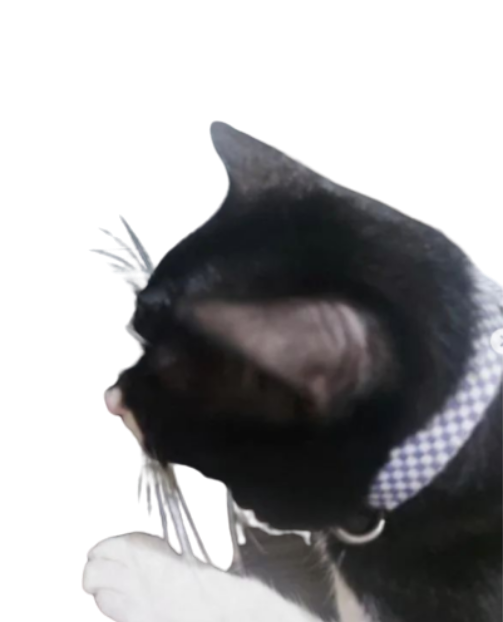
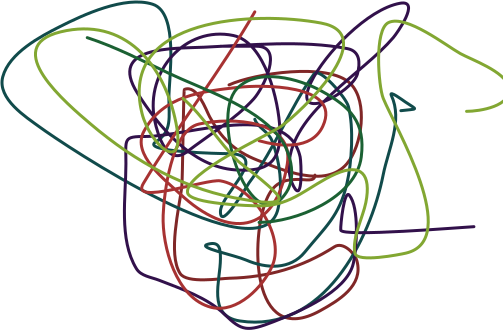

Eu era um gato bom, que passava horas codando no computador, no inicio eu amava aquilo, estava aprendendo HTML, CSS
Mas com o tempo chegou o JavaScript, e depois disso minha vida mudou
Eu já não via minha familia, amigos, colegas, eu já não via ninguém, então logo eu percebi o que eu tinha me tornado
Mas a vida tinha outros planos para mim, eu sabia que eu tinha alguns dons, eu por exemplo desenhava muito bem
Eu quando era Dev sempre julguei os Artistas e Designs, e eu me tornei o que eu mais temia